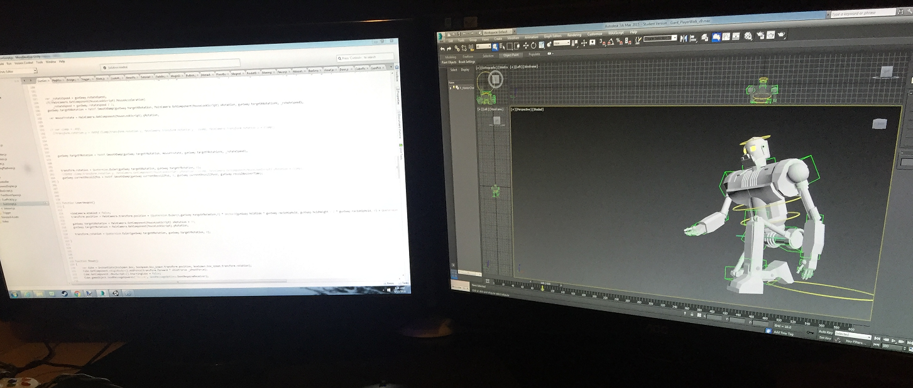
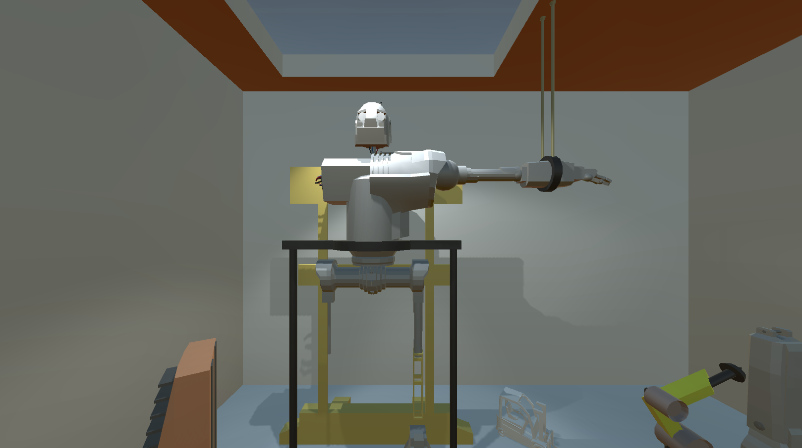
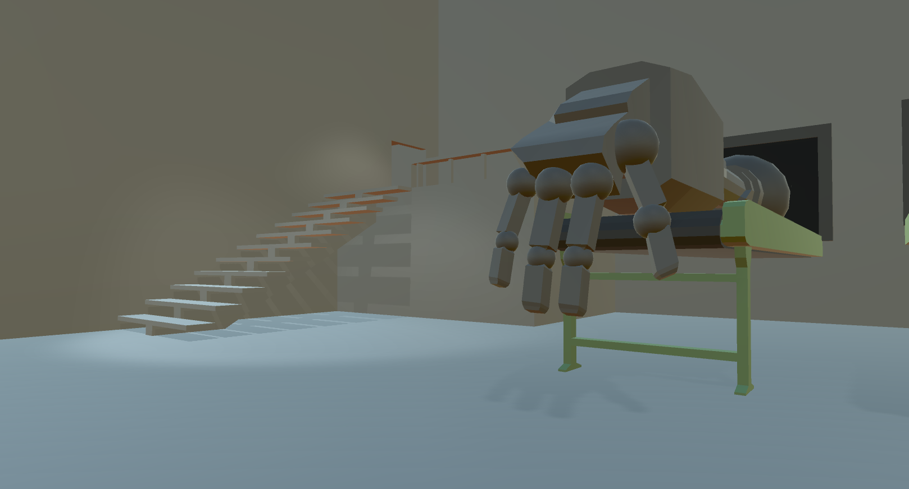

Stepping On Sandcastles
Stepping On Sand Castles had undergone many revisions. This was a long-term solo project that explored ideas about game narratives. The game was built in Unity. All of the models and animations were created by hand in 3ds Max.
It started as a first-person puzzle platformer in which you launched boxes to move around and solve puzzles. There were surfaces that increased run and jump speed, anti-gravity zones, buttons, bridges, fans, and more.

As the game took shape, I became fixated on the development of the story. Initially, the story was meant to merely function as glue, piecing the rest of the game together. I soon found that the story parts quickly surpassed the rest of the game in terms of interestingness. It was clear that the story was being undermined by the existing game mold.
I decided to drop the platforming entirely and focus on building a game that supports the story.

This involved implementing various challenges that each had a symbolic meaning within the story. These included memory games, patience tests, detective reasoning, and a stage performance.
Games are an inherently interactive medium, which runs contradictory to traditional storytelling. Crafting a deep narrative game experience requires new ways of approaching narrative that I feel the medium of games has yet to fully investigate, let alone master. Armed with this new perspective, I’ve since stumbled upon a methodology for storytelling that I prefer, one that’s about discoverability and allowing the player to understand or not understand the world they are in. This was my approach with the following game West-Ward.
For those wanting more detail, here’s a complete overview of the project: